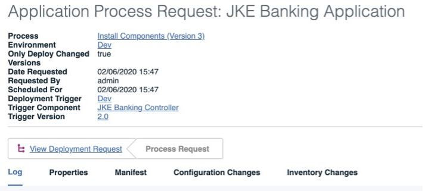
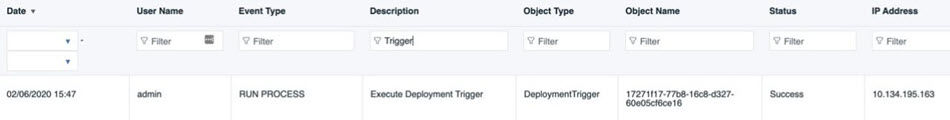

Deployment triggers
Starting with v7.1.0, deployment triggers replace the run process after a version is created feature.
Deployment Triggers are ways for environments to subscribe to certain components. A trigger consists of a specified component, deployment process, and user. Whenever a component finishes importing a version, the server will automatically execute all deployment triggers relevant to that component and will run configured deployment processes against the triggers’ environment, using the newly imported version as the deployment payload. With deployment triggers, development environments can be configured to get the latest build artifacts deployed as soon as they are received by the IBM DevOps Deploy (Deploy) server.
When you create a deployment trigger, you have to specify a user who has the run deployment triggers permission, but you do not require that permission yourself. Run deployment triggers is a system level permission that governs whether the a user is allowed to run the process that is the trigger specifies
The user who runs the deployment trigger also must have all permissions that are required to run an application process. Like the run deployment triggers permission, these permissions are also asserted at process run time and not when the trigger is created.
The default audit view is as follows:
- When the deployment trigger is created and who created it
- When the deployment trigger is deleted and who deleted it


Migration
Database upgrades transfer existing deployment triggers to a new table and remove the current constraints, indexes, and columns from the component table.
The specified user for these rows is admin by default.
Importing and exporting
Applications and snapshots that are imported or exported retain information about their deployment triggers.
Importing application snapshots that include component versions do not activate deployment triggers.
Copying an environment retains information about deployment triggers.
Approvals
- The component must be mapped to the application when the deployment trigger submits the process request.
- The application process and component must not be deleted.
- The user who runs the deployment must have run deployment triggers permission when deployment trigger runs.